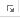
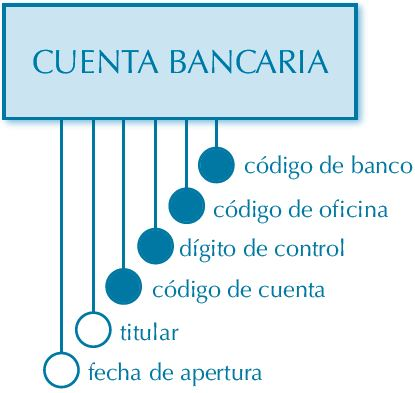
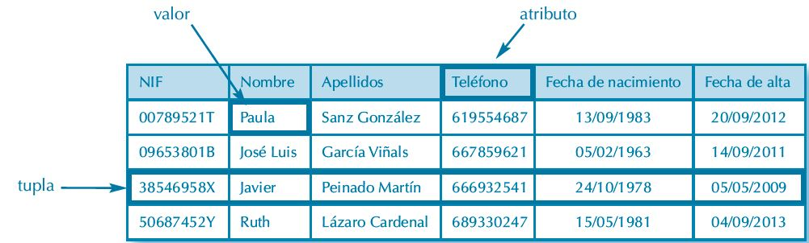
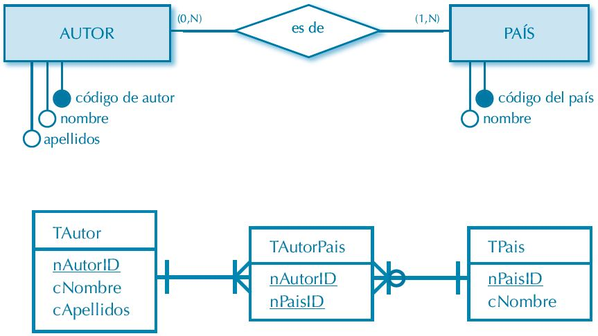

Validación de datos
La validación de datos nos permite asegurarnos de que los valores que se introducen en las celdas son los adecuados;
pudiendo incluso mostrar un mensaje de error o aviso si nos equivocamos. La validación de datos también es sumamente
útil cuando quiere compartir un libro con otros usuarios y quiere que los datos que se escriban en él sean exactos
y coherentes.
¿Cuándo es útil la validación de datos?
Puede usar la validación
de datos para lo siguiente, entre otras aplicaciones:
- Limitar las entradas a elementos predefinidos en una lista:
Por ejemplo, puede limitar las elecciones
de departamento de un usuario a Contabilidad, Nóminas o RR. HH., por nombrar algunos.
- Limitar los números a un rango específico:
Por ejemplo, puede especificar una entrada de porcentaje máxima
para el aumento anual de un empleado, un 3 %, por ejemplo, o permitir que sea solo un número entero entre 1 y 100.
- Limitar las fechas a un período de tiempo específico:
Por ejemplo, en una solicitud de vacaciones de un empleado,
puede evitar que alguien seleccione una fecha antes de la del día actual.
- Limitar las horas a un período de tiempo específico:
Por ejemplo, puede especificar la programación de
una reunión entre las 8:00 y las 17:00.
- Limitar el número de caracteres de texto:
Por ejemplo, puede imponer un límite al texto permitido en
una celda a 10 o menos caracteres.
- Validar datos según fórmulas o valores de otras celdas:
Por ejemplo, puede usar la validación
de datos para establecer un límite máximo para comisiones y bonificaciones, en función del valor de nómina
general proyectado. Si los usuarios escriben un valor superior al límite, aparecerá un mensaje de error.
Mensajes de error y de entrada de validación de datos
Puede decidir mostrar un mensaje de entrada cuando el usuario seleccione la celda. Los mensajes
de entrada se usan normalmente para ofrecer instrucciones a los usuarios sobre el tipo de datos que quiere
que escriban en la celda. Este tipo de mensaje aparece cerca de la celda. Puede mover este mensaje, si quiere,
y permanece visible hasta que lo mueve a otra celda o presiona Esc.
Puede configurar el mensaje de entrada en la segunda pestaña de validación de datos.
Cuando los usuarios se familiaricen con el mensaje de entrada, puede desmarcar la opción
Mostrar mensaje de entrada al seleccionar la celda.
Puede elegir entre tres tipos de mensajes de error:
|
Icono
|
Tipo
|
Uso
|

|
Detención
|
Impide que los usuarios escriban datos no válidos en una celda.
Un mensaje de alerta de Detención tiene dos opciones: Volver a intentar o Cancelar.
|

|
Advertencia
|
Advierte a los usuarios de que los datos indicados no son válidos, pero sin evitar que los escriban.
Cuando aparece un mensaje de alerta de Advertencia, los usuarios pueden hacer clic en Sí para aceptar la entrada no válida, No para editarla o Cancelar para quitar la entrada no válida.
|

|
Información
|
Informa a los usuarios de que los datos indicados no son válidos, pero sin evitar que los escriban. Este tipo de alerta de error es el más flexible.
Cuando aparece un mensaje de alerta de Información, los usuarios pueden hacer clic en Aceptar para aceptar el valor no válido o Cancelar para rechazarlo.
|
Aplicar una validación a una celda.
- Seleccionamos la celda que queremos validar.
- Accedemos a la pestaña Datos y pulsamos Validación de datos. En él podremos escoger
remarcar los errores con círculos o borrar estos círculos de validación. Pero nos vamos a centrar
en la opción Validación de datos
- Nos aparece un cuadro de diálogo Validación de datos como el que vemos en la imagen donde
podemos elegir entre varios tipos de validaciones.
- En la sección Criterio de validación indicamos la condición para que el datos sea correcto.
- Dentro de Permitir podemos encontrar:
- Cualquier valor,
- Número entero,
- Decimal,
- Lista,
- Fecha, Hora,
- Longitud de texto
- Personalizada.
Por ejemplo si elegimos Número entero, Excel sólo permitirá números enteros en esa celda,
si el usuario intenta escribir un número decimal, se producirá un error.
- Podemos restringir más los valores permitidos en la celda con la opción Datos, donde, por ejemplo,
podemos indicar que los valores estén entre 2 y 8.
- Si en la opción Permitir: elegimos Lista, podremos escribir una lista de valores para que el usuario pueda
escoger un valor de los disponibles en la lista. En el recuadro que aparecerá, Origen: podremos escribir los distintos
valores separados por ; (punto y coma) para que aparezcan en forma de lista.
- En la pestaña Mensaje de entrada podemos introducir un mensaje que se muestre al acceder a la celda. Este mensaje
sirve para informar de qué tipos de datos son considerados válidos para esa celda.
- En la pestaña Mensaje de error podemos escribir el Mensaje de error que queremos se le muestre al usuario
cuando introduzca en la celda un valor incorrecto.
Configuración de página
Antes de imprimir una hoja de cálculo, es conveniente que configuremos la página,
para modificar factores que afectan a la presentación de las páginas impresas,
como la orientación, encabezados y pies de página, tamaño del papel, etc
Una de las funciones relacionada con los formatos es Configurar página, que contiene varios
elementos relativos al aspecto general de cualquier hoja de cálculo pensados para mejorar su
presentación a la hora de realizar una impresión. Sus funciones se encuentran en la pestaña
Diseño de página de la cinta de opciones:
En el grupo Configurar página
encontraremos botones rápidos a muchas de las opciones: para configurar márgenes, la orientación del papel, el tamaño, etc.
Pero si lo que queremos es acceder a todas las opciones de configuración,
deberemos pulsar el pequeño botón de la esquina inferior derecha
, como siempre,
se abrirá una nueva ventana con todas las funciones disponibles:
Página
El cuadro de diálogo Configurar página está organizado en varias pestañas: La primera de las fichas
se denomina Página y permite indicar características como la orientación del papel, el tamaño del
papel que utilizamos y otros parámetros.

- El grupo Orientación permitirá establecer cómo se desea que aparezcan los
datos en la hoja de papel: de forma Vertical (que es el modo normal) u horizontal
(con el botón Horizontal).
- El grupo Ajuste de escala permite ampliar o reducir proporcionalmente el
tamaño de los datos en la página, generalmente para ajustarlos a las hojas de
papel. Esto se realiza mediante un porcentaje (con Ajustar al) en el que 100% es el
tamaño normal, o bien con el botón Ajustar a en el que indicaremos cuántas
páginas deseamos obtener por cada hoja.
- Puede elegirse el tamaño de la hoja de papel, según sus dimensiones, con la lista
desplegable que ofrece Tamaño del papel.
- Calidad de impresión ofrece datos para realizar una impresión de mayor o
menor calidad. Para una mejor impresión hay que establecer un valor más alto en
ppp (puntos por pulgada).
- Se puede establecer cuál será el Primer número de la página con el cuadro de
texto que lleva su nombre. Normalmente suele activarse el modo Automático, pero
sustituyendo esa palabra por un número se indica cuál será el encargado de iniciar
la numeración.
Margenes
Si se accede a la pestaña Márgenes se pueden modificar las distancias de éstos:
- Se utiliza Superior, Inferior, Izquierdo y Derecho para establecer las distancias
correspondientes de los márgenes de la hoja.
- También pueden establecerse las medidas que separan el Encabezado del borde
superior de la hoja, así como el Pie de página del borde inferior de la misma.
- Si se desea que los datos de la hoja de cálculo aparezcan centrados en la hoja, se
deben activar las casillas Horizontalmente y Verticalmente.
Encabezado y pie de página
Con la ficha Encabezado y pie de página puede añadirse un encabezado y un pie
de página que se repetirá en todas las páginas que contengan datos que se vayan a imprimir:
- Se despliega la lista Encabezado para elegir el texto que se repetirá en la parte
superior de todas las hojas de papel. Puede verse una muestra del resultado en el
cuadro en blanco que aparece en la parte superior del cuadro de diálogo (este resultado
sólo se ve al imprimir o al consultar el modo vista preliminar).
- Igualmente, en la lista Pie de página puede elegirse el texto que se repetirá en la
parte inferior de las hojas de cálculo (el resultado aparece únicamente al imprimir
o al consultar el modo vista preliminar).
- Si ninguno de los elementos de estas listas es adecuado, pueden añadirse un texto
personalizado y sus atributos de aspecto mediante los botones
y
 , que llevan a un cuadro de diálogo en el
que se añade el texto en una de las secciones (Sección izquierda, Sección central
o Sección derecha) para que el texto aparezca alineado así en la hoja de papel.
También se utiliza la hilera de botones sobre dichas secciones para aplicar
funciones como la fuente para el texto, añadir el número de página, añadir la fecha,
añadir el nombre de la hoja, etc.
, que llevan a un cuadro de diálogo en el
que se añade el texto en una de las secciones (Sección izquierda, Sección central
o Sección derecha) para que el texto aparezca alineado así en la hoja de papel.
También se utiliza la hilera de botones sobre dichas secciones para aplicar
funciones como la fuente para el texto, añadir el número de página, añadir la fecha,
añadir el nombre de la hoja, etc.
Hoja
La pestaña Hoja permite especificar las zonas de la hoja que se imprimirán y
regula datos como los títulos que se imprimirán, otros detalles para imprimir las hojas de cálculo o el
orden en que aparecerán las páginas, si bien, maneja también otras funciones que pasamos a
ver:
Observaciones:
Siempre que aparezca el botón  a la derecha de un cuadro de texto en Excel, puede utilizarlo para seleccionar un rango de celdas.
Se siguen estos pasos:
a la derecha de un cuadro de texto en Excel, puede utilizarlo para seleccionar un rango de celdas.
Se siguen estos pasos:
- Se pulsa el botón
el cuadro de diálogo se reduce para mostrar la
hoja de cálculo.
- Se selecciona el rango de celdas con el ratón directamente sobre la hoja.
- Se vuelve a pulsar el botón
(en el cuadro de diálogo que ha quedado
reducido) para devolverlo a su tamaño normal y continuar el trabajo: el
rango ya estará escrito en el cuadro de texto.
- El cuadro de texto Área de impresión permite establecer un rango de la hoja de
cálculo cuyo contenido será lo único que se imprimirá.
- El grupo Imprimir títulos tiene dos cuadros de texto para imprimir títulos en
filas y columnas (en la parte externa de la hoja). Con Repetir filas en extremo
superior debe establecerse la fila que se utilizará como título, aunque se puede
indicar la dirección de una celda o de un grupo de ellas si son contiguas. Los pasos
que se deben seguir son los mismos con Repetir columnas a la izquierda, y el
resultado es que los títulos aparecen en las columnas en lugar de en las filas.
Grupo imprimir
Con el grupo Imprimir pueden especificarse varios datos que Excel tendrá en
cuenta a la hora de proporcionar datos por la impresora:
- Si se activa la casilla Líneas de división, Excel imprime las líneas que separan las
celdas en las hojas de cálculo. Se desactiva si no se desea que aparezcan en el
papel
- Con Blanco y negro se imprimen todos los datos de la celda en blanco y
negro. Es aconsejable utilizar este botón si se utiliza una impresora en blanco y
negro, ya que la calidad de los datos impresos será mayor. Si la impresora es
en color, suele ser aconsejable no activar este botón para obtener una mayor
calidad.
- Se activa Calidad de borrador para obtener el resultado impreso en una
calidad inferior. Las líneas que dividen las celdas no se imprimen y se
consigue una mayor rapidez a la hora de imprimir.
- Con Títulos de filas y columnas se puede indicar si se desea que se impriman
éstos o no. Suele ser aconsejable imprimirlos como guía para el papel de la
hoja de cálculo que se imprime.
- En la lista desplegable Comentarios se puede elegir si se imprimen las
anotaciones de celda de la hoja en la parte inferior de la hoja (Al final de la
hoja), en las mismas celdas en que se encuentren (Como en la hoja), o bien,
si no se imprimen (ninguno).
- Desplegando la lista Errores de celdas como se puede elegir si se desea que
también aparezcan en el papel los errores que obtengamos en pantalla y en
qué forma deben mostrarse. Por ejemplo, se selecciona (espacio vacío ) para
que los errores no aparezcan en el papel.
Observaciones: En las cuatro pestañas anteriores dispone de los siguientes botones:
- Pulse el botón
 para obtener las opciones de imprimir en papel.
para obtener las opciones de imprimir en papel.
- Pulse el botón
 para obtener una vista previa de cómo queda, por el momento, la hoja de cálculo.
para obtener una vista previa de cómo queda, por el momento, la hoja de cálculo.
- El botón
 muestra opciones estándar de Windows para la impresión de datos en la impresora. Por ejemplo, al pulsar este botón,
podremos indicar de nuevo si deseamos una impresión vertical u horizontal. Los elementos que aparezcan en el
cuadro que se muestra son diferentes para cada impresora, dependiendo de las funciones que tenga cada una.
muestra opciones estándar de Windows para la impresión de datos en la impresora. Por ejemplo, al pulsar este botón,
podremos indicar de nuevo si deseamos una impresión vertical u horizontal. Los elementos que aparezcan en el
cuadro que se muestra son diferentes para cada impresora, dependiendo de las funciones que tenga cada una.
Configuracion de impresión
Si hemos pulsado Imprimir o Vista previa desde la ventana anterior, o bien si seleccionamos la
opción Imprimir del menú Archivo, veremos la siguiente ventana:
Observación: También podemos utilizar la combinación de teclas Ctrl + p para acceder a ella.
En la zona izquierda dispondremos de una serie de opciones de configuración de la impresión, que nos permitirán:
- Elegir cuántas copias imprimir del documento.
- Escoger qué impresora queremos utilizar en la impresión del documento, en caso de que no queramos utilizar la
predeterminada que viene seleccionada por defecto. También podremos modificar las Propiedades de impresora seleccionada.
- Opciones de Configuración como:
- Qué hojas imprimir: Las hojas activas, todo el libro, o bien la selección realizada.
- La intercalación. Cuando imprimimos varias copias sin intercalación se imprime X veces cada página,
por ejemplo: 1,1,1 2,2,2 3,3,3 4,4,4 sería la impresión de tres copias de un libro que ocupa
cuatro páginas. En cambio, si utilizamos el intercalado, se imprime el trabajo completo, una vez tras otra.
El mismo ejemplo sería: 1,2,3,4 1,2,3,4 1,2,3,4
- La orientación y el tamaño del papel.
- Modificar los márgenes.
- Ajustar la escala de impresión.
- Acceder a la Configuración de página.
En la zona de la derecha vemos la vista previa de la página. En caso de tener más de una página, podremos
cambiar la página a visualizar utilizando los botones inferiores o escribiendo el número de la página
a visualizar  .
Si nuestra hoja sólo tiene 1 página éstos botones estarán inactivos.
.
Si nuestra hoja sólo tiene 1 página éstos botones estarán inactivos.
También en la zona inferior derecha, encontramos dos botones para personalizar la vista previa,
pudiendo mostrar/ocultar los márgenes y elegir si visualizar la página completa.
Cuando esté todo listo para la impresión y quede como deseas, podrás pulsar el botón
de la zona superior.
Modelo Entidad-Relación y Modelo Relacional de base de datos
Base de Datos
En 1597 sir Francis Bacon acuñó la conocida frase "Knowledge itself is a power"", adaptada generalmente
al castellano como "La información es poder". Hoy en día la información es el activo más valioso de toda organización,
y las bases de datos son la respuesta a las necesidades técnicas surgidas hace unas
décadas.
Una base de datos es un conjunto de información organizada de forma lógica, de tal manera que es
posible extraer toda la información o una parte de ella en cualquier momento. Las bases de datos
tienen importantes aplicaciones en la administración de empresas e instituciones públicas.
Algunas de sus aplicaciones representativas son:
- Banca:
Para información de los clientes, cuentas, préstamos y transacciones bancarias
- Líneas aéreas:
Para reservas e información de horarios. Las líneas aéreas fueron de las primeras en
usar las bases de datos de forma distribuida geográficamente
- Universidades:
Para información de los estudiantes, matrículas en las asignaturas y cursos.
- Transacciones de tarjetas de crédito:
Para compras con tarjeta de crédito y
la generación de los estados de cuenta
- Telecomunicaciones:
Para guardar un registro de las llamadas realizadas, generar
las facturas mensuales, mantener el saldo de las tarjetas telefónicas de prepago y
para almacenar información sobre las redes de comunicaciones.
- Finanzas:
Para almacenar información sobre compañías tenedoras, ventas y
compras de productos financieros, como acciones y bonos; también para almacenar
datos del mercado en tiempo real para permitir a los clientes la compraventa en línea
y a la compañía la compraventa automática.
- Ventas:
Para información de clientes, productos y compras
- Comercio en línea:
Para los datos de ventas ya mencionados y para el seguimiento de los pedidos
Web, generación de listas de recomendaciones y mantenimiento de evaluaciones de productos
en línea
- Producción:
Para la gestión de la cadena de proveedores y para el seguimiento de la producción
de artículos en las factorías, inventarios en los almacenes y pedidos.
- Recursos humanos:
Para información sobre los empleados, salarios, impuestos sobre los sueldos y
prestaciones sociales, y para la generación de las nóminas
Importante: Las bases de datos forman una parte esencial de casi todas las empresas actuales.
Las bases de datos requieren de un software que permita la administración de dicha base de datos.
Estos programas especializados sirven como interfaz para que los usuarios puedan administrar como
se estructura y optimiza toda la información recopilada.
Sistema Gestor de Base de Datos (SGBD)
Se le llama sistema gestor de bases de datos ( SGBD aunque se suele
utilizar más a menudo las siglas DBMS procedentes del inglés, Data Base Management System) a
una colección de datos interrelacionados y un conjunto de programas para acceder a dichos datos.
El objetivo principal de un SGBD es proporcionar una forma de almacenar y recuperar la información de una base
de datos de manera que sea tanto práctica como eficiente.
Los sistemas gestores de bases de datos se diseñan para gestionar grandes cantidades de información
de tal manera que se garantiza la fiabilidad de la información almacenada, a pesar de las caídas del sistema o
de los intentos de acceso no autorizados. Si los datos van a ser compartidos entre diferentes usuarios, el
sistema debe evitar posibles resultados anómalos.
Entre los sistemas gestores de bases de datos (SGBD) más conocidos se encuentran: Microsoft Access y MySQL.
Bases de datos vs Hojas de cálculo
Las bases de datos y las hojas de cálculo son herramientas útiles para almacenar
información. Las principales diferencias entre ambas son:
- La forma de manipular y guardar la información.
- La cantidad de datos que se pueden almacenar
- La accesibilidad a esos datos almacenados.
Las hojas de cálculo desde sus comienzos fueron diseñadas para un usuario. Son
excelentes para uno o un pequeño número de usuarios que no necesitan utilizar un
gran volumen de datos.
Las bases de datos, por otro lado, fueron creadas para almacenar gran cantidad
de información organizada, permite acceder y consultar los datos de forma rápida
y segura a muchos usuarios al mismo tiempo.
Cuando diseñamos una base de datos, debemos
tomar en cuenta las siguientes aspectos:
- Trate de planificar para el futuro e incluya todos los datos que probablemente necesite.
- Tenga un campo separado para cada división de los datos que anticipe necesitar.
- Evite almacenar campos calculados
Recuerda: Una base de datos bien diseñada no solo ayuda a garantizar la integridad de los datos,
sino que es más fácil de mantener y actualizar.
Modelo entidad-relación
También conocido como diagrama o modelo E-R o E/R. El diagrama entidad/relación
es una técnica cuyo objetivo es la representación y definición de todos los datos que se introducen,
almacenan, transforman y producen dentro de un sistema de información, sin tener en cuenta
las necesidades de la tecnología existente, ni otras restricciones.
Definimos sistema de información como el conjunto de procedimientos y funciones dirigidos
a la recolección, elaboración, evaluación, almacenamiento, recuperación, condensación y distribución
de informaciones dentro de una organización
El Diagrama E-R dará solución al problema planteado sin importar cuál sea el SGBD comercial que se
vaya a utilizar. Para ello parte de una serie de conceptos que se describen a continuación:
Entidad
Una entidad es cualquier objeto real o abstracto que tiene existencia por sí mismo y se puede
identificar de una forma clara y precisa, y del cual se desea registrar información en el sistema.
Es el elemento fundamental que hay que caracterizar.
Se representa con sustantivos en singular
que encierran un concepto, y es labor del analista identificar dichos sustantivos.
Ejemplos Los siguientes son ejemplos de entidad:
- "Empleado",
- "Cliente",
- "Factura",
- "Línea de factura",
- "Proveedor".
Cada elemento concreto de una entidad es una ocurrencia.
En el ejemplo de la entidad “Empleado”, cada uno de los empleados es una ocurrencia de dicha
entidad. A su vez, cada ocurrencia presenta una serie de datos asociados:
Un empleado tendrá nombre, apellidos, NIF, dirección postal, número de teléfono, etc.
Cada uno de esos datos es un atributo, y cada ocurrencia tiene distintos valores para cada atributo.
En la entidad “Empleado”, un empleado concreto tendrá “Juan Antonio” como valor de su atributo “Nombre”, “García Corredor”
como valor de su atributo “Apellidos” y “52874660Y” como valor de su atributo “NIF”.
Toda entidad debe cumplir dos características:
- Presencia del mismo conjunto de atributos para todas las ocurrencias, independientemente
de que alguna ocurrencia carezca de valor para algún atributo.
- Diferenciación unívoca de ocurrencias. No puede haber dos ocurrencias con los mismos
valores para todos sus atributos.
Representación gráfica de una entidad
La representación gráfica de una entidad consiste en un rectángulo con el nombre de la entidad
en su interior, generalmente en mayúsculas. Los atributos asociados a una entidad se pueden
representar de dos formas:
- Mediante óvalos que incluyen el nombre del atributo,
- Mediante círculos con el nombre del atributo en el exterior.
Hay dos tipos de entidades:
- Fuerte o regular. No depende de otra. Corresponde a la inmensa mayoría de las entidades.
- Débil. La existencia de sus ocurrencias depende de la existencia de ocurrencias en otras
entidades.
Ejemplo: Consideremos un sistema de información de una biblioteca. Si queremos llevar un control sobre
las multas impuestas a los socios por devolución tardía de libros, crearemos una entidad “Multa”.
Toda multa se impone a un socio; por tanto, no podrá haber ocurrencias en la entidad “Multa” si
no existe una ocurrencia correspondiente a un socio en la entidad “Socio”.
Para que una entidad sea débil tiene que serlo respecto a todas las entidades con las que se relaciona.
Las entidades débiles se representan mediante un doble rectángulo:
Relación
Una relación es una asociación o vínculo entre ocurrencias de varias entidades. Se nombran
con expresiones verbales.
Ejemplos de relaciones serían la existente entre las ocurrencias de la
entidad “Cliente” y las de la entidad “Factura” (ya que toda factura corresponde a un cliente),
y a la que podríamos llamar “genera” (se leería “cliente genera factura”).
Representacón gráfica de una relación
La representación gráfica de una relación consiste en un rombo rodeando su nombre:
Clasificación de relaciones
De acuerdo al número de entidades cuyas ocurrencias relacionan, podemos dividir las relaciones
en varias categorías:
- Binarias. Relacionan entre sí ocurrencias de dos entidades.
Ejemplo:
En el ejemplo anterior, la relación "genera" entre “Cliente” y “Factura” representa una relacion binaria y
gráficamente se representa como:
- Ternarias. Relacionan entre sí ocurrencias de tres entidades.
Ejemplo: Consideremos un sistema de información correspondiente a un centro de enseñanza.
Cada profesor imparte una serie de asignaturas a distintos grupos de alumnos. Si
disponemos de las entidades “Profesor”, “Grupo” y “Asignatura”, tendríamos que relacionar
sus ocurrencias mediante la siguiente relación ternaria:
- N-arias. Dependiendo de la complejidad de nuestro modelo de datos podemos relacionar
ocurrencias de más de tres entidades.
Ejemplo:
Supongamos que en la relación del ejemplo anterior
sea necesario, además, indicar en qué aula se imparte cada asignatura a cada grupo:
Como criterio de diseño se identifican relaciones ternarias o n-arias cuando la acción
identificada por la relación afecta de forma simultánea a las ocurrencias de todas las entidades
relacionadas (un profesor imparte una asignatura a un grupo en un aula en un
momento concreto, por lo que existe simultaneidad temporal).
- Reflexivas. Relacionan entre sí ocurrencias de la misma entidad. Para comprenderlas correctamente
hay que tener en cuenta que las ocurrencias que relacionan, aun perteneciendo
a la misma entidad, están jugando papeles distintos.
Ejemplo Consideremos una entidad “Empleado” que almacena
ocurrencias de empleados de una empresa. Hay empleados que son jefes de otros, y todos
los empleados figuran como ocurrencias de la entidad “Empleado”. En este caso, debemos
relacionar ocurrencias de “Empleado” correspondientes a empleados que tienen jefe con
ocurrencias de “Empleado” correspondientes a empleados que son jefes de otros:
Cardinalidad y modalidad
Para dotar de contenido semántico a una relación hay que especificar de qué modo se relacionan
entre sí las ocurrencias de las distintas entidades, estableciendo ámbitos, límites y restricciones.
Cardinalidad
La cardinalidad (también llamada tipo de correspondencia por algunos autores) indica el número máximo
de ocurrencias de una entidad con las que se puede relacionar una ocurrencia de otra entidad.
Ejemplos:
- Toda factura deba emitirse a nombre de un
solo cliente, pero que cada cliente pueda emitir muchas facturas,
- Cada proveedor suministre varios artículos y que cada artículo sea suministrado por varios
proveedores,
- Cada empleado se siente en una ubicación concreta de la oficina y a cada ubicación corresponda
solamente un empleado.
La cardinalidad refleja estos casos del siguiente modo:
- 1:N (uno a ene/uno a muchos). Una ocurrencia de una entidad puede relacionarse con
varias de otra entidad, pero cada ocurrencia de la segunda entidad solo puede relacionarse
con una única ocurrencia de la primera entidad.
Ejemplo: Supongamos una empresa donde cada empleado pertenece a un departamento y en
cada departamento puede haber varios empleados. Esta sería la representación gráfica:
- M:N (eme a ene/muchos a muchos). Cada ocurrencia de una entidad puede relacionarse
con varias de otra entidad, y cada ocurrencia de la segunda entidad también puede relacionarse
con varias de la primera.
Ejemplo: Si en nuestro sistema de información un músico puede tocar varios instrumentos y
un instrumento puede ser tocado por varios músicos:
- 1:1 (uno a uno). Una ocurrencia de una entidad se relaciona con otra ocurrencia de otra
entidad y viceversa.
Ejemplo: Una consultora financiera podría asignar a cada cliente una única cartera de inversión
propia:
Modalidad
La cardinalidad delimita los límites superiores de una relación, pero no define su obligatoriedad.
¿Todo instrumento debe ser tocado por algún músico? ¿Podría haber alguna ocurrencia
en la entidad “Instrumento” que no tuviera relación con otra ocurrencia en la entidad “Músico”?
Puede que, como requisito del sistema de información, la entidad “Instrumento” deba contener
una lista de instrumentos independientemente de que haya algún músico que los toque (quizás
una de las ocurrencias de “Instrumento” corresponda al acordeón y, en cambio, en “Músico”
no haya ninguna ocurrencia correspondiente a un músico que toque el acordeón). Pero también
puede que el sistema de información exija que las ocurrencias de “Instrumento” se carguen a
medida que se introduzcan en “Músico” ocurrencias de músicos, de modo que todos los instrumentos
tendrían su correspondencia con, al menos, un músico. Obviamente, las dos situaciones
son incompatibles en un buen diseño de datos, y la cardinalidad no nos aporta la
información necesaria para solventar esta disyuntiva.
La modalidad (llamada por algunos autores cardinalidad, con la consiguiente confusión) define
el número mínimo y máximo de ocurrencias de una entidad que pueden estar relacionadas con
una ocurrencia de otra u otras entidades, identificando relaciones optativas (en las que no tiene
por qué haber correspondencia).
La modalidad se indica a ambos lados de la relación, y su valor
máximo coincide con el valor de la cardinalidad correspondiente al lado de la relación en el
que nos encontremos.
Puede ser de los siguientes tipos:
- 0..1 (cero a uno). Cada ocurrencia de la primera entidad puede relacionarse con una
ocurrencia de la segunda entidad o no. No puede relacionarse con varias.
- 1..1 (uno a uno). Cada ocurrencia de la primera entidad debe relacionarse obligatoriamente
con una y solo una ocurrencia de la segunda entidad.
- 1..N (uno a ene/uno a muchos). Cada ocurrencia de la primera entidad debe relacionarse
obligatoriamente con al menos una ocurrencia de la segunda entidad. Puede relacionarse
con varias.
- 0..N (cero a ene/cero a muchos). Cada ocurrencia de la primera entidad no tiene limitada
su relación con ocurrencias de la segunda entidad. Puede relacionarse con una, varias
o ninguna.
Ejemplo: Veamos el siguiente ejemplo, correspondiente a un concesionario de automóviles:
Para cada entidad de la relación debemos leer su modalidad en el lado opuesto. En este caso, la modalidad de “Cliente” con respecto a “Automóvil” es de 0..N,
y la de “Automóvil” con respecto a “Cliente” es de 0..1. Esta relación “compra” se leería del siguiente modo:
- Toda ocurrencia de “Cliente” puede relacionarse con varias ocurrencias de “Automóvil”,
con una o con ninguna (en lenguaje natural: un cliente puede no comprar, comprar un
automóvil o comprar varios automóviles).
- Toda ocurrencia de “Automóvil” puede relacionarse con una sola ocurrencia de
“Cliente” o no (un automóvil puede ser vendido a un solo cliente, o bien no ser vendido;
en cualquier caso, el mismo automóvil no puede ser vendido a varios clientes).
Atributos de relación
En algunas ocasiones, ciertas propiedades o características susceptibles de constituir un atributo
afectan a más de una entidad
Retomando uno de los ejemplos previos: Es fácil identificar posibles
atributos de la entidad “Socio” (“NIF”, “Nombre”, “Apellidos”, “Dirección”, “Teléfono”, “Fecha
de nacimiento”, “Fecha de alta”) y de la entidad “Libro” (“Signatura”, “Título”, “Autor”, “Editorial”,
“Año de publicación”). No obstante, un dato importante que el sistema debe registrar
es la fecha del préstamo. No puede figurar como atributo de “Socio”, porque impediría que un
socio pudiera tomar más de un libro en préstamo, y no puede figurar como atributo de “Libro”
porque impediría que un libro fuera prestado más de una vez. Afecta a ocurrencias de ambas
entidades, por lo que debe figurar en la relación:
Clave primaria y claves candidatas
En toda entidad hay al menos un atributo o conjunto de atributos cuyos valores identifican de
forma unívoca a cada una de las ocurrencias. Observemos el siguiente ejemplo:
Si queremos elegir un conjunto de atributos que identifiquen de forma única a cada empleado,
podemos pensar en la combinación de “Nombre” y “Apellidos”, pero presenta un gran problema:
no garantiza la unicidad (puede haber dos empleados llamados “Juan Pérez García”).
Si seguimos buscando entre la lista de atributos, veremos tres posibles opciones: “Código de empleado”, “NIF” y
“Número de la Seguridad Social”. Cada uno de los tres sirve para identificar a cada ocurrencia de
forma única e inconfundible (no puede haber dos empleados con el mismo NIF, ni con el mismo
número de la Seguridad Social, ni con el mismo código de empleado, suponiendo que dicho código
haya sido definido de forma única).
Esos tres atributos son llamados claves candidatas, y el que elijamos
para identificar a las ocurrencias de la entidad será la clave primaria (primary key).
Por motivos de rendimiento de la base de datos resultante, se recomienda elegir la clave primaria
más pequeña posible.
En un diagrama entidad/relación las claves primarias se representan subrayando el nombre
del atributo si se ha optado por dibujar los atributos en el interior de un óvalo, u oscureciendo
el círculo si se ha decidido utilizar el otro tipo de representación gráfica.
Supongamos que hemos elegido “NIF” como clave primaria:
Clave primaria compuesta
A veces un solo atributo no es suficiente para identificar de forma unívoca todas las ocurrencias
de una entidad, por lo que hay que construir una clave primaria que incluya los valores
de varios atributos en el orden especificado, es decir, una clave primaria compuesta.
Ejemplo: En el siguiente ejemplo, la entidad “Cuenta bancaria” necesita cuatro atributos para definir su clave primaria,
ya que cada uno de ellos es susceptible de repetir valores en distintas ocurrencias:

Ejemplo de diagrama entidad/relación
Se ha de definir el modelo de datos de una biblioteca con las siguientes restricciones básicas:
- Cada libro registrado cuenta con varios ejemplares físicos.
- Todo libro corresponde a una o varias temáticas, está escrito por uno o varios autores y
publicado por una sola editorial.
- Los ejemplares se prestan a los socios. Hay que guardar la fecha de préstamo.
- Es necesario almacenar la nacionalidad o nacionalidades de cada autor, así como el país
donde cada editorial tiene su sede principal.
A pesar de que falta mucha información sobre los requisitos de la aplicación, el siguiente
diagrama cumple con las restricciones expuestas:s
Modelo relacional
Definido por Edgar F. Codd en el IBM Research Center de San José (California) en 1970, el
modelo relacional buscaba una solución a los problemas derivados de la rigidez estructural de
las bases de datos jerárquicas y en red imperantes en la época. Presentado en sólidos términos
matemáticos, independiza los datos de su tratamiento.
Relación
El elemento básico del modelo relacional es la relación, una estructura bidimensional que representa
las entidades y algunas relaciones del diagrama entidad-relación. Las filas de una relación,
llamadas tuplas, corresponden a las ocurrencias; cada tupla cuenta con una serie de atributos,
cada uno de ellos con un valor. Vemos como ejemplo la relación “Socio”:

Dominio
Se le llama dominio de un atributo al conjunto de valores que puede tomar para una ocurrencia
concreta. Aunque de acuerdo a la definición teórica del modelo relacional cada dominio
corresponde exclusivamente a los valores posibles (es decir, el dominio del atributo “Apellidos”
es el conjunto de apellidos de los socios), la idea de dominio típicamente se asocia con la de tipo
de datos (es decir, el conjunto de combinaciones de datos que podría constituir un dominio, de
modo que desde un punto de vista técnico cualquier combinación de caracteres alfanuméricos,
aunque no tenga sentido, podría representar los apellidos de un socio). Se identifican los siguientes
tipos de datos base:
- Números enteros.
- Números decimales.
- Cadenas de caracteres.
- Fechas y horas.
- Valores lógicos (verdadero o falso).
- Objetos (ficheros binarios).
También se pueden definir conjuntos de valores a medida. Un ejemplo sería un atributo
“día de la semana”, cuyos posibles valores fueran los contenidos en el conjunto {“lunes”, “martes”,
“miércoles”, “jueves”, “viernes”, “sábado”, “domingo”}.
Hay un valor especial que constituye un tipo por sí mismo: el valor nulo o NULL, que representa
ausencia de valor. No se debe confundir con el valor vacío (“” en un campo de tipo
cadena de caracteres, o 0 en un campo numérico).
Normalización
También a Codd se debe la definición de una serie de normas cuya aplicación elimina las redundancias
de información en una solución relacional. La técnica es conocida como normalización,
y consiste en llevar todas las relaciones a determinados estados llamados formas normales.
A continuación se describen dichas formas normales y cómo se llega hasta ellas.
Primera forma normal ( 1FN )
Una relación está en primera forma normal (1FN) si todos sus valores son atómicos, es decir,
cada valor de los dominios de todos los atributos es único. En el siguiente ejemplo (clave primaria
en negrita) vemos un atributo, “Teléfono”, cuyos valores no son atómicos, sino repetitivos:
Una primera solución para alcanzar la 1FN consiste en atomizar el atributo “Teléfono”, del
siguiente modo:
Esta solución implica una fuerte redundancia (“Nombre” y “Apellidos” se repiten por cada
teléfono), e invalida a “NIF” como clave primaria, obligando a ampliar dicha clave primaria con
el atributo “Teléfono”. Por ese motivo se propone una solución más elaborada consistente en
dividir la relación original en dos (una con las personas y otra con los teléfonos), vinculándolas
mediante los valores de la clave primaria original:
La 1FN es parte de la definición del modelo relacional, por lo que su cumplimiento es
obligatorio.
Segunda forma normal ( 2FN )
Una relación está en segunda forma normal ( 2FN ) si cumple las siguientes reglas:
- Está en 1FN.
- Todos los atributos que no forman parte de la clave primaria dependen de ella por completo.
La relación siguiente ilustra el stock de una librería. La clave primaria está compuesta por
dos atributos (“Código de libro” y “Código de tienda”), pero el atributo “Dirección” no depende
de toda la clave, sino únicamente del atributo “Código de tienda”. Por ese motivo se repite la
dirección de la tienda 9, con la consiguiente redundancia de información:
En este caso, el proceso de normalización obliga a dividir la relación en dos, una con la información
de la tienda y otra con la del stock:
Nótese que la 2FN solo se puede violar si la clave primaria está compuesta por más de un
atributo, por lo que toda relación en 1FN cuya clave primaria esté formada por un solo atributo
también está en 2FN.
Tercera forma normal ( 3FN )
Una relación está en tercera forma normal ( 3FN ) si cumple las siguientes reglas:
- Está en 2FN.
- Todos los atributos que no forman parte de la clave primaria son independientes entre
sí, es decir, no dan información sobre otros atributos de la relación.
El siguiente ejemplo ilustra una relación con información sobre empleados. Todos los atributos
dependen directamente de la clave primaria (“Código de empleado”) excepto “Nombre
de departamento”, que depende de “Código de departamento”:
La información sobre el departamento constituirá una nueva relación:
Paso del Modelo E-R al modelo físico de datos
El objetivo del diagrama entidad-relación y las técnicas de normalización es proporcionar el
mejor diseño posible para una futura base de datos. En una implementación relacional la información
se almacena en forma de tablas con campos y registros, a modo de las relaciones, los atributos
y las tuplas del modelo relacional (coincidentes, a su vez, con las entidades y relaciones,
los atributos y las ocurrencias del diagrama entidad-relación).
Se muestra la tabla TSocio, resultante de la relación “Socio” vista anteriormente:
Nomenclatura
A partir de este momento vamos a definir una nomenclatura común a todos los elementos de
modelo físico y base de datos referidos. Para ello se usará como punto de partida la notación
húngara, definida en los años 70 por Charles Simonyi, programador húngaro de Xerox. Simonyi
estableció unas reglas de nominación de variables que aportaba información sobre su ámbito y
tipo de datos. Centrada originalmente en código fuente de programación, se presenta a continuación
una adaptación reducida de la notación húngara a los nombres de elementos de una
base de datos relacional, según los siguientes criterios:
A pesar de que esta nomenclatura puede resultar insuficiente en el entorno de trabajo de
un SGBD real, nos servirá como marco de referencia común para los ejemplos de este texto.
Queda a discreción del lector ampliarla y/o adaptarla como convenga a sus necesidades.
Reglas de transformación
Se propone la siguiente representación gráfica de modelo físico de datos:
- Las tablas se representan como un rectángulo con el nombre de la tabla en la parte superior
y la lista de campos en la inferior. Los campos que conformen la clave primaria
irán subrayados y en orden:
- La modalidad irá implícita en la terminación de las líneas que relacionan tablas, del siguiente
modo:
En algunos casos, las relaciones generan tablas (se verá en breve). A la hora de dar nombre a
dichas tablas se pueden seguir dos criterios:
- Utilizar un sustantivo que represente la acción implícita en la relación (“cliente contrata
servicio” generaría una tabla TContrato, “usuario compra producto” generaría TCompra).
- Concatenar los nombres de las entidades relacionadas (“profesor imparte asignatura” generaría
TProfesorAsignatura).
La transformación de componentes del diagrama entidad-relación en elementos del modelo
físico de datos sigue las siguientes reglas:
- Toda entidad se convierte en una tabla.
- Todo atributo pasa a ser un campo. Los atributos marcados como parte de la clave primaria
se convierten en campos de la clave primaria de la nueva tabla, conservando su
orden.
- Las relaciones presentan una casuística basada en su cardinalidad. Uno de los objetivos
fundamentales a la hora de diseñar una base de datos es evitar la proliferación de valores
nulos:
- Relaciones M:N, ternarias y n-arias. Se convierten en tabla. Su clave primaria será la
concatenación de las claves primarias de las entidades que relacionan.
EL MODELO RELACIONAL. NORMALIZACIÓN
CAPÍTULO
